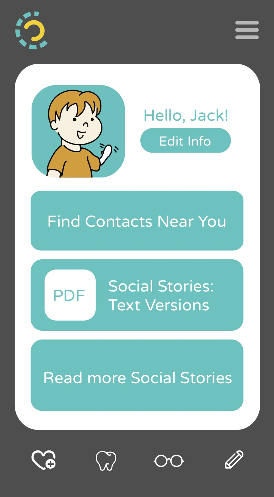
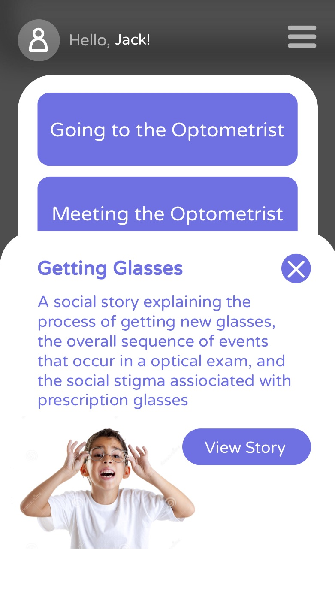
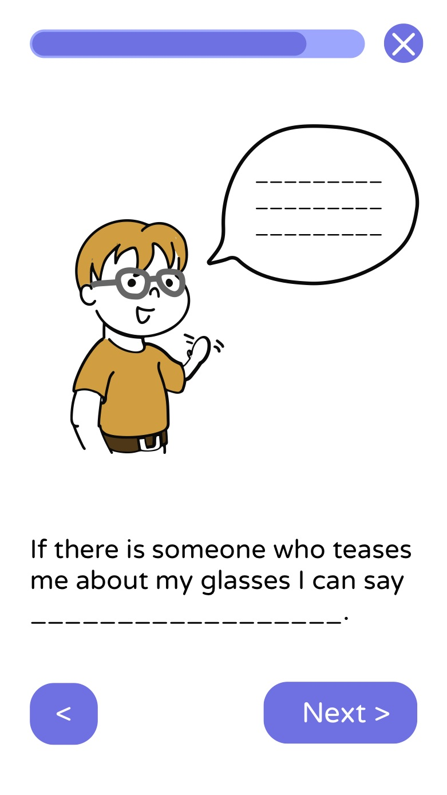
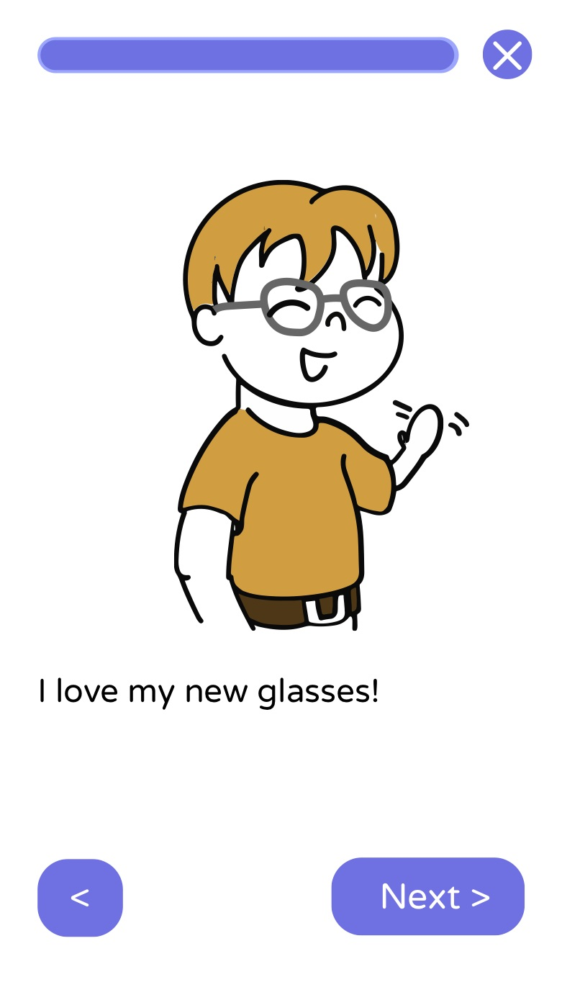

Story Trails
The Story Trails project is part of the Design for America organization at Carnegie Mellon. We aim to create an application for those on the autistic spectrum that would reduce their anxiety in new, stressful situations. Research has shown that social stories, a tool to describe events and communicate social information, can better equip those on the autistic spectrum for new experiences. Thus, we work with the Autism Society of Pittsburgh to implement a customizable, personal application filled with social stories. Below, you can find the designs of our current prototype.





